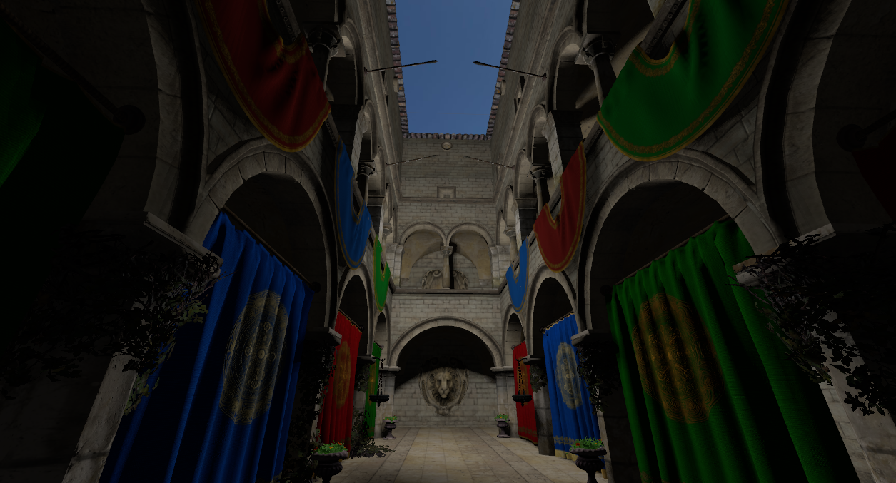
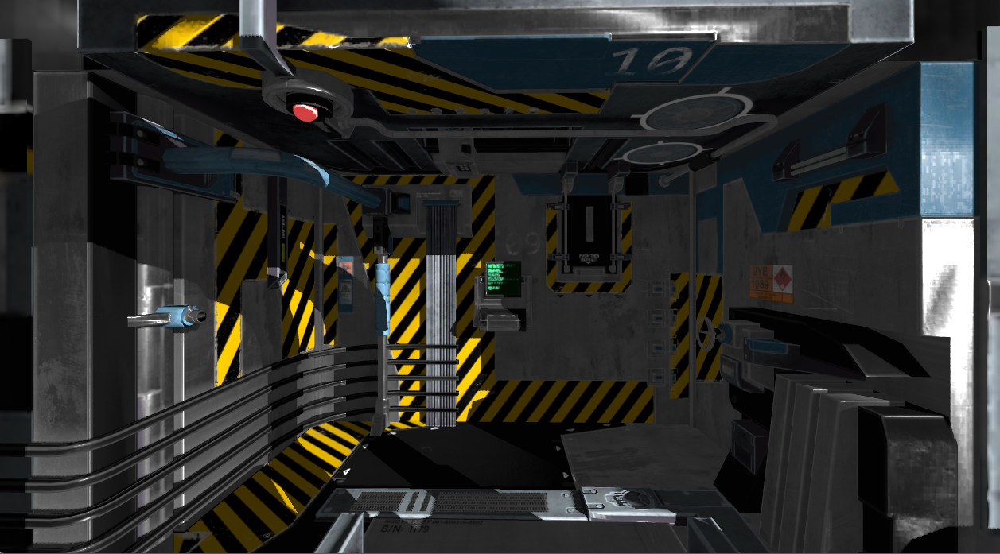
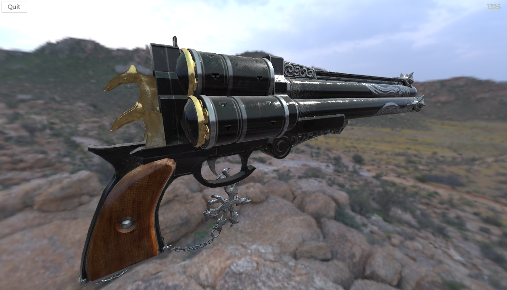
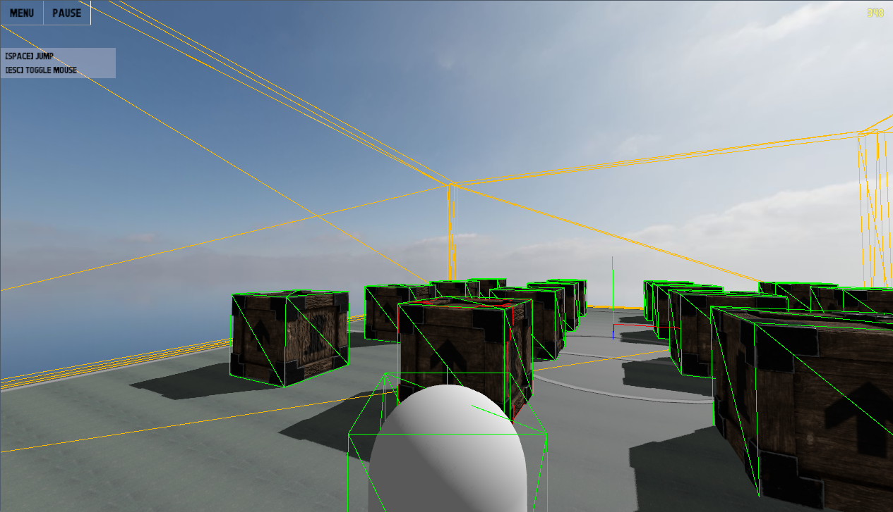

User documentation
ZeroZero is a 3D game engine based on Vulkan 1.3 and Jolt 5.x made in Modern C++ for learning purpose.
Released under the MIT license.
Features
Some of the features actually implemented or under construction :
- Vulkan based forward rendering system with optional depth pre-pass and multisampling.
- Scene tree with classic, object-oriented node system (inspired by Godot, including the signal system).
- Physic system based on Jolt Physics.
- PBR materials & shader.
- Shader-based materials.
- HDR tone mapping.
- Frustum culling.
- In-game debug
- Blender add-on
- JPEG/PNG and HDRi skybox.
- Directional lights, omni (point) lights and spotlights.
- Image based lighting for HDRi skybox.
- Cascaded shadow maps for directional lights.
- Cubemap shadow maps for omni lights.
- JSON scene files.
- glTF support.
- ZRes binary file format for better loading time and decreased VRAM usage.
- UI framework
- Animations
Examples
Screenshots
Example level with tunnel, doors and rooms (with Space Colony Modular Kit Bash, source code in the ZeroZero examples):

Classic Sponza with one OmniLight: 
VR Room with one DirectionalLight: 
Cerberus with IBL : 
Collision objects debug : 
Contact
For more information, contact the project maintainers at GitHub project page
Vulkan extensions and third parties dependencies used
- Dynamic rendering (VK_KHR_dynamic_rendering)
- Shader object (VK_EXT_shader_object)
- volk to load Vulkan functions
- VulkanMemoryAllocator for Vulkan buffers allocations
- glm for mathematics
- stb for image loading and glyph rendering
- fastgltf for glTF scene loading
- Jolt Physics for the physics system
- meshoptimizer for meshes optimization